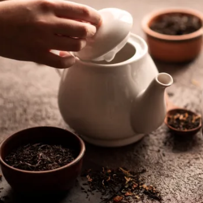

파란만잔은 자연이 준 향과 맛을 살린 블렌딩 티를 연구·개발하는 티 브랜드입니다. 차가 지닌 본연의 매력을 새롭게 해석해, 일상 속에서 부담 없이 즐길 수 있는 차 경험을 만듭니다.


브랜드 철학
각 재료만의 특징을 조화롭게 살리고, 먼저 눈으로 즐기는 플라워 티를 비롯해 다양한 플레이버 티를 통해 정교한 맛과 향을 전합니다.
티 연구소
PARANMANJAN 티 연구소는 배합·추출·관능 평가 과정을 통해 제품의 품질과 일관성을 지키며, 새로운 레시피 개발과 시즌 메뉴 제안에도 힘쓰고 있습니다.